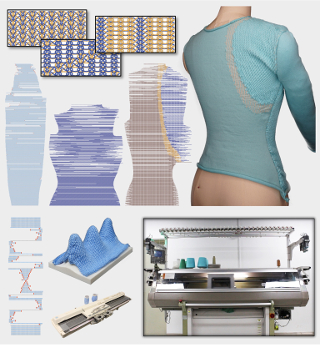
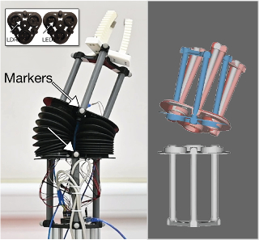
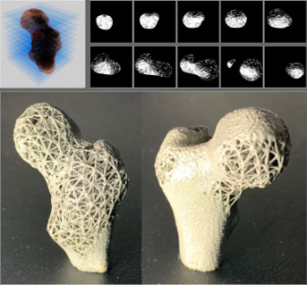
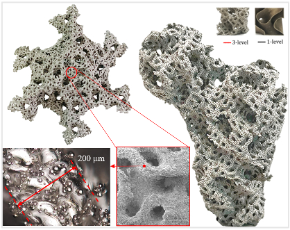
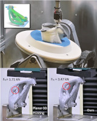
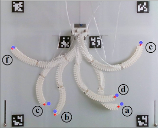

Disclaimer: The documents listed on this page are copyright-protected. By clicking on the [PDF] links below, you confirm that you or your institution have the right to access the corresponding pdf file.
Recent Papers
|  |
Zishun Liu, Xingjian Han, Yuchen Zhang, Xiangjia Chen, Yukun Lai, Eugeni L. Doubrovski, Emily Whiting, and Charlie C.L. Wang, "Knitting 4D garment with elasticity controlled for body motion", ACM Transactions on Graphics (SIGGRAPH 2021), vol.40, no.4, article no.62 (16 pages), August 2021.
[Project]
[PDF]
[Source Code]
[Video@YouTube]
Abstract In this paper, we present a new computational pipeline for designing and fabricating 4D garments as knitwear that considers comfort during body movement. This is achieved by careful control of elasticity distribution to reduce uncomfortable pressure and unwanted sliding caused by body motion. We exploit the ability to knit patterns in different elastic levels by single-jersey jacquard (SJJ) with two yarns. We design the distribution of elasticity for a garment by physics-based computation, the optimized elasticity on the garment is then converted into instructions for a digital knitting machine by two algorithms proposed in this paper. Specifically, a graph-based algorithm is proposed to generate knittable stitch meshes that can accurately capture the 3D shape of a garment, and a tiling algorithm is employed to assign SJJ patterns on the stitch mesh to realize the designed distribution of elasticity. The effectiveness of our approach is verified on simulation results and on specimens physically fabricated by knitting machines. |
|  |
Rob B.N. Scharff, Guoxin Fang, Yingjun Tian, Jun Wu, Jo M.P. Geraedts, and Charlie C.L. Wang, "Sensing and reconstruction of 3D deformation on pneumatic soft robots", IEEE/ASME Transactions on Mechatronics, accepted.
[arXiv]
[Video@YouTube]
Abstract Real-time proprioception is a challenging problem for soft robots, which have almost infinite degrees-of-freedom in body deformation. When multiple actuators are used, it becomes more difficult as deformation can also occur on actuators caused by interaction between each other. To tackle this problem, we present a method in this paper to sense and reconstruct 3D deformation on pneumatic soft robots by first integrating multiple low-cost sensors inside the chambers of pneumatic actuators and then using machine learning to convert the captured signals into shape parameters of soft robots. An exterior motion capture system is employed to generate the datasets for both training and testing. With the help of good shape parameterization, the 3D shape of a soft robot can be accurately reconstructed from signals obtained from multiple sensors. We demonstrate the effectiveness of this approach on two designs of soft robots - a robotic joint and a deformable membrane. After parameterizing the deformation of these soft robots into compact shape parameters, we can effectively train the neural networks to reconstruct the 3D deformation from the sensor signals. The sensing and shape prediction pipeline can run at 50Hz in real-time on a consumer-level device. |
|  |
Shengjun Liu, Tao Liu, Qiang Zou, Weiming Wang, Eugeni L. Doubrovski, and Charlie C.L. Wang, "Memory-efficient modeling and slicing of large-scale adaptive lattice structures", ASME Journal of Computing and Information Science in Engineering, vol.21, no.6, 061003 (16 pages), December 2021.
[arXiv]
[Source Code]
Abstract Lattice structures have been widely used in various applications of additive manufacturing due to its superior physical properties. If modeled by triangular meshes, a lattice structure with huge number of struts would consume massive memory. This hinders the use of lattice structures in large-scale applications (e.g., to design the interior structure of a solid with spatially graded material properties). To solve this issue, we propose a memory-efficient method for the modeling and slicing of adaptive lattice structures. A lattice structure is represented by a weighted graph where the edge weights store the struts' radii. When slicing the structure, its solid model is locally evaluated through convolution surfaces and in a streaming manner. As such, only limited memory is needed to generate the toolpaths of fabrication. Also, the use of convolution surfaces leads to natural blending at intersections of struts, which can avoid the stress concentration at these regions. We also present a computational framework for optimizing supporting structures and adapting lattice structures with prescribed density distributions. The presented methods have been validated by a series of case studies with large number (up to 100M) of struts to demonstrate its applicability to large-scale lattice structures. |
 |
Tianyu Zhang, Xiangjia Chen, Guoxin Fang, Yingjun Tian, and Charlie C.L. Wang, "Singularity-aware motion planning for multi-axis additive manufacturing", IEEE Robotics and Automation Letters,
Presented at IEEE International Conference on Automation Science and Engineering (CASE 2021), Lyon, France, August 23-27, 2021, vol.6, no.4, pp.6172-6179, October 2021.
[arXiv]
[Source Code]
[Video@YouTube]
Abstract Multi-axis additive manufacturing enables high flexibility of material deposition along dynamically varied directions. The Cartesian motion platforms of these machines include three parallel axes and two rotational axes. Singularity on rotational axes is a critical issue to be tackled in motion planning for ensuring high quality of manufacturing results. The highly nonlinear mapping in the singular region can convert a smooth toolpath with uniformly sampled waypoints defined in the model coordinate system into a highly discontinuous motion in the machine coordinate system, which leads to over-extrusion / under-extrusion of materials in filament-based additive manufacturing. The problem is challenging as both the maximal and the minimal speeds at the tip of a printer head must be controlled in motion. Moreover, collision may occur when sampling-based collision avoidance is employed. In this paper, we present a motion planning method to support the manufacturing realization of designed toolpaths for multi-axis additive manufacturing. Problems of singularity and collision are considered in an integrated manner to improve the motion therefore the quality of fabrication. |
|  |
Junhao Ding, Qiang Zou, Shuo Qu, Paulo Bartolo, Xu Song, and Charlie C.L. Wang, "STL-free design and manufacturing paradigm for high-precision powder bed fusion", CIRP Annals - Manufacturing Technology, vol.70, no.1, pp.167-170, July 2021.
[PDF]
[Source Code]
Abstract High-precision powder bed fusion (PBF), together with highly complex geometries necessitate a much more scalable representation of the geometry and an efficient computational pipeline. This paper presents a new digital design and manufacturing paradigm to solve the scalability and efficiency challenges by using the concept of STL-free workflow. It seamlessly integrates implicit solid modelling for design and direct slicing for manufacturing without any intermediate steps related to STL meshes. The presented paradigm has been validated by two case studies involving complex geometries filled with multiscale triply periodic minimal surfaces (TPMS), which are fabricated by PBF with laser beam size 25μm. |
 |
Chuhua Xian, Dongjiu Zhang, Chengkai Dai, and Charlie C.L. Wang, "Fast generation of high fidelity RGB-D images by deep-learning with adaptive convolution", IEEE Transactions on Automation Science and Engineering, vol.18, no.3, pp.1328-1340, July 2021.
[arXiv]
[Source Code]
[Dataset]
Abstract Using the raw data from consumer-level RGB-D cameras as input, we propose a deep-learning based approach to efficiently generate RGB-D images with completed information in high resolution. To process the input images in low resolution with missing regions, new operators for adaptive convolution are introduced in our deep-learning network that consists of three cascaded modules - the completion module, the refinement module and the super-resolution module. The completion module is based on an architecture of encoder-decoder, where the features of input raw RGB-D will be automatically extracted by the encoding layers of a deep neural-network. The decoding layers are applied to reconstruct the completed depth map, which is followed by a refinement module to sharpen the boundary of different regions. For the super-resolution module, we generate RGB-D images in high resolution by multiple layers for feature extraction and a layer for up-sampling. Benefited from the adaptive convolution operators newly proposed in this paper, our results outperform the existing deep-learning based approaches for RGB-D image complete and super-resolution. As an end-to-end approach, high fidelity RGB-D images can be generated efficiently at the rate of around 21 frames per second. |
|  |
Guoxin Fang, Tianyu Zhang, Sikai Zhong, Xiangjia Chen, Zichun Zhong, and Charlie C.L. Wang, "Reinforced FDM:
Multi-axis filament alignment with controlled anisotropic strength", ACM Transactions on Graphics (SIGGRAPH Asia 2020),
vol.39, no.6, article no.204 (15 pages), November 2020.
[Project]
[PDF]
[Source Code]
[Video@YouTube]
Abstract The anisotropy of mechanical strength on a 3D printed model can be controlled in a multi-axis 3D printing system as materials can be accumulated along dynamically varied directions. In this paper, we present a new computational framework to generate specially designed layers and toolpaths of multi-axis 3D printing for strengthening a model by aligning filaments along the directions with large stresses. The major challenge comes from how to effectively decompose a solid into a sequence of strength-aware and collision-free working surfaces. We formulate it as a problem to compute an optimized governing field together with a selected orientation of fabrication setup. Iso-surfaces of the governing field are extracted as working surface layers for filament alignment. Supporting structures in curved layers are constructed by extrapolating the governing field to enable the fabrication of overhangs. Compared with planar-layer based Fused Deposition Modeling (FDM) technology, models fabricated by our method can withstand up to 6.35x loads in experimental tests. |
 |
Yiu-Bun Wu, Bin Liu, Xiuping Liu, and Charlie C.L. Wang,
"Data-driven human modeling by sparse representation",
Computer-Aided Design, vol.128, 102913, November 2020. [PDF]
Abstract Data-driven methods for modeling the realistic shape of 3D human bodies need to access datasets that contain a large amount of 3D human models. A very challenging problem is to find an appropriate representation for storing these 3D models as their raw data representations in triangular meshes take a large amount of space. We develop a method based on sparse representation in this paper to represent 3D human models as signals of patches. Unlike the general mesh compression approaches, all mesh models used in a data-driven human modeling framework have the same mesh connectivity. By using this property, we segment a human model into patches containing the same number of vertices. L0-learning algorithm is selected to train an overcomplete dictionary matrix, which in turn introduced sparse representation of the dataset. Patch signals of individual human models can then be extracted by using the dictionary matrix. With the ease of balance control between sparsity and accuracy that is featured by the chosen learning algorithm, a representation with high compression ratio and low shape-approximation error can be determined. The results have been compared with the widely used statistic representation based on principal component analysis (PCA) to verify the effectiveness of our approach. Moreover, the method for using sparse representation in the regression-based statistical modeling of 3D human models has been presented at the end of the paper. |
 |
Tim Kuipers, Eugeni L. Doubrovski, Jun Wu, and Charlie C.L. Wang, "A framework for adaptive width control of dense contour-parallel toolpaths in fused deposition modeling", Computer-Aided Design, vol.128, 102907, November 2020.
[arXiv]
Abstract 3D printing techniques such as Fused Deposition Modeling (FDM) have enabled the fabrication of complex geometry quickly and cheaply. High stiffness parts are produced by filling the 2D polygons of consecutive layers with contour-parallel extrusion toolpaths. Uniform width toolpaths consisting of inward offsets from the outline polygons produce over- and underfill regions in the center of the shape, which are especially detrimental to the mechanical performance of thin parts. In order to fill shapes with arbitrary diameter densely the toolpaths require adaptive width. Existing approaches for generating toolpaths with adaptive width result in a large variation in widths, which for some hardware systems is difficult to realize accurately. In this paper we present a framework which supports multiple schemes to generate toolpaths with adaptive width, by employing a function to decide the number of beads and their widths. Furthermore, we propose a novel scheme which reduces extreme bead widths, while limiting the number of altered toolpaths. We statistically validate the effectiveness of our framework and this novel scheme on a data set of representative 3D models, and physically validate it by developing a technique, called back pressure compensation, for off-the-shelf FDM systems to effectively realize adaptive width. |
 |
Chengkai Dai, Sylvain Lefebvre, Kai-Ming Yu, Jo M.P. Geraedts, and Charlie C.L. Wang,
"Planning jerk-optimized trajectory with discrete-time constraints for redundant robots", IEEE Transactions on Automation Science and Engineering, vol.17, no.4, pp.1711-1724, October 2020.
[arXiv]
[Video@YouTube] Abstract We present a method for effectively planning the motion trajectory of robots in manufacturing tasks, the tool-paths of which are usually complex and have a large number of discrete-time constraints as waypoints. Kinematic redundancy also exists in these robotic systems. The jerk of motion is optimized in our trajectory planning method at the meanwhile of fabrication process to improve the quality of fabrication. Our method is based on a sampling strategy and consists of two major parts. After determining an initial path by graph-search, a greedy algorithm is adopted to optimize a path by locally applying adaptive filers in the regions with large jerks. The filtering result is obtained by numerical optimization. In order to achieve efficient computation, an adaptive sampling method is developed for learning a collision-indication function that is represented as a support-vector machine. Applications in robot-assisted 3D printing are given in this paper to demonstrate the functionality of our approach. |
 |
Chenming Wu, Yong-Jin Liu, and Charlie C.L. Wang, "Learning to accelerate decomposition for multi-directional 3D printing", IEEE Robotics and Automation Letters, Presented at IEEE International Conference on Automation Science and Engineering (CASE 2020), Hong Kong, August 20-24, 2020, vol.5, no.4, pp.5897-5904, October 2020.
[arXiv]
[Source Code]
[Video@YouTube]
Abstract Multi-directional 3D printing has the capability of decreasing or eliminating the need for support structures. Recent work proposed a beam-guided search algorithm to find an optimized sequence of plane-clipping, which gives volume decomposition of a given 3D model. Different printing directions are employed in different regions to fabricate a model with tremendously less support (or even no support in many cases). To obtain optimized decomposition, a large beam width needs to be used in the search algorithm, leading to a very time-consuming computation. In this paper, we propose a learning framework that can accelerate the beam-guided search by using a smaller number of the original beam width to obtain results with similar quality. Specifically, we use the results of beam-guided search with large beam width to train a scoring function for candidate clipping planes based on six newly proposed feature metrics. With the help of these feature metrics, both the current and the sequence-dependent information are captured by the neural network to score candidates of clipping. As a result, we can achieve around 3x computational speed. We test and demonstrate our accelerated decomposition on a large dataset of models for 3D printing. |

|
Guoxin Fang, Christopher-Denny Matte, Rob B.N. Scharff, Tsz-Ho Kwok, and Charlie C.L. Wang, "Kinematics of soft robots by geometric computing", IEEE Transactions on Robotics, vol.36, no.4, pp.1272-1286, August 2020.
[PDF]
[Source Code]
[Video@YouTube]
(This is an extended version of the paper - Geometry-based direct simulation for multi-material soft robots, which is published in 2018 IEEE ICRA Conference, Brisbane, Australia, May 21-25, 2018.) Abstract Robots fabricated with soft materials can provide higher flexibility and thus better safety while interacting in unpredictable situations. However, the usage of soft material makes it challenging to predict the deformation of a continuum body under actuation and therefore brings difficulty to the kinematic control of its movement. In this paper, we present a geometry-based framework for computing the deformation of soft robots within the range of linear material elasticity. After formulating both manipulators and actuators with geometry elements, deformation can be efficiently computed by solving a constrained optimization problem. Based on its efficiency, forward and inverse kinematics for soft manipulators can be effectively solved by an iterative algorithm. Meanwhile, components with multiple materials can also be geometrically modeled in our framework with the help of a simple calibration. Numerical and physical experimental tests are conducted on soft manipulators driven by different actuators with large deformation to demonstrate the performance of our approach. |

|
Alice Buso, Rob B.N. Scharff, Eugeni L. Doubrovski, Jun Wu, Charlie C.L. Wang, and Peter Vink,
"Soft robotic module for sensing and controlling contact force",
IEEE International Conference on Soft Robotics (RoboSoft 2020), Yale University, New Haven, Connecticut, USA, April 6-9, 2020.
[PDF] [Video@YouTube] Abstract This work presents a soft robotic module that can sense and control contact forces. The module is composed of a foam spring encapsulated by a pneumatic bellow that can be inflated to increase its stiffness. Optical sensors and a light source are integrated inside the soft pneumatic module. Changes in shape of the module lead to a variation in light reflectivity, which is captured by the optical sensors. These shape measurements are combined with air pressure measurements to predict the contact force through a machine learning model. Using these predictions, a closed-loop control of the contact force was implemented. The modules can be applied to realize pressure distribution control in support devices such as seats and mattresses. The presented method is robust and low-cost, can measure both shape and contact force, and does not require (rigid) sensors to be present at the movable contact interface between the support device and the user. |

|
Chenming Wu, Chengkai Dai, Guoxin Fang, Yong-Jin Liu, and Charlie C.L. Wang, "General support-effective decomposition for multi-directional 3-D printing", IEEE Transactions on Automation Science and Engineering, vol.17, no.2, pp.599-610, April 2020.
[arXiv]
[Source Code]
[Video@YouTube]
[Report@3DPrint.com]
Abstract We present a method for fabricating general models with multi-directional 3D printing systems by printing different model regions along different directions. The core of our method is a support-effective volume decomposition algorithm that minimizes the area of the regions with large overhangs. A beam-guided searching algorithm with manufacturing constraints determines the optimal volume decomposition, which is represented by a sequence of clipping planes. While current approaches require manually assembling separate components into a final model, our algorithm allows for directly printing the final model in a single pass. It can also be applied to models with loops and handles. A supplementary algorithm generates special supporting structures for models where supporting structures for large overhangs cannot be eliminated. We verify the effectiveness of our method using two hardware systems: a Cartesian-motion based system and an angular-motion based system. A variety of 3-D models have been successfully fabricated on these systems. |

|
Weiming Wang, Dirk Munro, Charlie C.L. Wang, Fred van Keulen, and Jun Wu,
"Space-time topology optimization for additive manufacturing: concurrent optimization of structural layout and fabrication sequence", Structural and Multidisciplinary Optimization, vol.61, pp.1-18, January 2020. (ISSMO/Springer Prize)
[Project]
[PDF]
Abstract The design of optimal structures and the planning of (additive manufacturing) fabrication sequences have been considered typically as two separate tasks that are performed consecutively. In the light of recent advances in robot-assisted (wire-arc) additive manufacturing which enable addition of material along curved surfaces, we present a novel topology optimization formulation which concurrently optimizes the structure and the fabrication sequence. For this, two sets of design variables, i.e. a density field for defining the structural layout, and a time field which determines the fabrication process order, are simultaneously optimized. These two fields allow to generate a sequence of intermediate structures, upon which manufacturing constraints (e.g. fabrication continuity and speed) are imposed. The proposed space-time formulation is general, and is demonstrated on three fabrication settings, considering self-weight of the intermediate structures, process-dependent critical loads, and time-dependent material properties. |

|
Lars Rossing, Rob B.N. Scharff, Bryan Chompff, Charlie C.L. Wang, and Eugeni L. Doubrovski, "Bonding between silicones and thermoplastics using 3D printed mechanical interlocking", Materials & Design, vol.186, article no.108254, January 2020.
[Video@YouTube]
Abstract Silicones have desirable properties such as skin-safety, high temperature-resistance, and flexibility. Many applications require the presence of a hard body connected to the silicone. Traditionally, it has been difficult to create strong bonding between silicones and hard materials. In this study, a technique is presented to control the bonding strength between silicones and thermoplastics through mechanical interlocking. This is realized through a hybrid fabrication method where silicone is cast onto a 3D-printed mold and structure. The influence of the structure's design parameters on the bonding strength is explored through theoretical modeling and physical testing while the manufacturability of the 3D-printed structure is ensured. A CAD tool is developed to automatically apply the bonding structure to product surfaces. The user interface visualizes the theoretical strength of the cells as the designer adjusts the cell parameters, allowing the designer to iteratively optimize the structure to the product's load case. The bonding strength of the presented mechanical interlocking structure is more than 5.5 times higher than can be achieved with a commercially available primer. The presented technique enables custom digital design and manufacturing of durable free-form parts. This is demonstrated through application of the technique in over-molded products, airtight seals, and soft pneumatic actuators. |

|
Rob B.N. Scharff, Rens M. Doornbusch, Eugeni L. Doubrovski, Jun Wu, Jo M.P. Geraedts, and Charlie C.L. Wang,
"Color-based proprioception of soft actuators interacting with objects", IEEE/ASME Transactions on Mechatronics, vol.24, no.5, pp.1964-1973, October 2019.
[PDF]
[Video@YouTube]
[Report@3DPrint.com]
Abstract Actuators using soft materials feature a large number of degrees of freedom. This tremendous flexibility allows a soft actuator to passively adapt its shape to the objects under interaction. In this paper we propose a novel proprioception method for soft actuators during real-time interaction with priorly unknown objects. Firstly, we design a color-based sensing structure that instantly translates the inflation of a bellow into changes in color, which are subsequently detected by a miniaturized color sensor. The color sensor is small and thus multiple of them can be integrated into soft pneumatic actuators to reflect local deformations. Secondly, we make use of a Feed-forward Neural Network (FNN) to reconstruct a multivariate global shape deformation from local color signals. Our results demonstrate that deformations of the actuator during interaction, including the sigmoid-like shape, can be accurately reconstructed. The accurate shape sensing represents a significant step towards closed-loop control of soft robots in unstructured environments. |

|
Chenming Wu, Rui Zeng, Jia Pan, Charlie C.L. Wang, and Yong-Jin Liu,
"Plant phenotyping by deep-learning based planner for multi-robots",
IEEE Robotics and Automation Letters, Presented at IEEE/RSJ International Conference on Intelligent Robots and Systems (IROS 2019), Macau, November 4-8, 2019, vol.4, no.4, pp.3113-3120, October 2019.
[PDF]
[Video@YouTube]
Abstract Manual plant phenotyping is slow, error-prone and labor-intensive. In this paper, we present an automated robotic system for fast, precise and noninvasive measurements using a new deep-learning based next-best view planning pipeline. Specifically, we first use a deep neural network to estimate a set of candidate voxels for next scanning. Next, we cast rays from these voxels to determine the optimal viewpoints. We empirically evaluate our method in simulation and real-world robotic experiments with up to three robotic arms to demonstrate its efficiency and effectiveness. One advantage of our new pipeline is that it can be easily extended to a multi-robot system where multiple robots move simultaneously according to the planned motions. Our system significantly outperforms the single-robot systems in flexibility and planning time. High-throughput phenotyping can be made practically. |

|
Tim Kuipers, Jun Wu, and Charlie C.L. Wang,
"CrossFill: Foam structure with graded density for continuous material extrusion",
Computer-Aided Design, Special Issue of 2019 Symposium on Solid and Physical Modeling, June 17-19, 2019, Vancouver, Canada, vol.114, pp.37-50, September 2019. (Best Paper Award - 2nd Place)
[PDF]
[Video@YouTube]
[Report@3DPrint.com]
Abstract The fabrication flexibility of 3D printing has sparked a lot of interest in designing structures with spatially graded material properties. In this paper, we propose a new type of density graded structure that is particularly designed for 3D printing systems based on filament extrusion. In order to ensure high-quality fabrication results, extrusion-based 3D printing requires not only that the structures are self-supporting, but also that extrusion toolpaths are continuous and free of self-overlap. The structure proposed in this paper, called CrossFill, complies with these requirements. In particular, CrossFill is a self-supporting foam structure, for which each layer is fabricated by a single, continuous and overlap-free path of material extrusion. Our method for generating CrossFill is based on a space-filling surface that employs spatially varying subdivision levels. Dithering of the subdivision levels is performed to accurately reproduce a prescribed density distribution. We demonstrate the effectiveness of CrossFill on a number of experimental tests and applications. |

|
Xiaoting Zhang, Guoxin Fang, Melina Skouras, Gwenda Gieseler, Charlie C.L. Wang, and Emily Whiting,
"Computational design of fabric formwork",
ACM Transactions on Graphics (SIGGRAPH 2019), vol.38, no.4, article no.109 (13 pages), July 2019.
[PDF]
[Video@YouTube]
Abstract We present an inverse design tool for fabric formwork - a process where flat panels are sewn together to form a fabric container for casting a plaster sculpture. Compared to 3D printing techniques, the benefit of fabric formwork is its properties of low-cost and easy transport. The process of fabric formwork is akin to molding and casting but having a soft boundary. Deformation of the fabric container is governed by force equilibrium between the pressure forces from liquid fill and tension in the stretched fabric. The final result of fabrication depends on the shapes of the flat panels, the fabrication orientation and the placement of external supports. Our computational framework generates optimized flat panels and fabrication orientation with reference to a target shape, and determines effective locations for external supports. We demonstrate the function of this design tool on a variety of models with different shapes and topology. Physical fabrication is also demonstrated to validate our approach. |

|
Jimmy Etienne, Nicolas Ray, Daniele Panozzo, Samuel Hornus, Charlie C.L. Wang,
Jonas Martinez, Sara McMains, Marc Alexa, Brian Wyvill, and Sylvain Lefebvre,
"CurviSlicer: Slightly curved slicing for 3-axis printers", ACM Transactions on Graphics (SIGGRAPH 2019), vol.38, no.4, article no.81 (11 pages), July 2019.
[PDF]
Abstract Most additive manufacturing processes fabricate objects by stacking planar layers of solidified material. As a result, produced parts exhibit a so-called staircase effect, which results from sampling slanted surfaces with parallel planes. Using thinner slices reduces this effect, but it always remains visible where layers almost align with the input surfaces. In this research we exploit the ability of some additive manufacturing processes to deposit material slightly out of plane to dramatically reduce these artifacts. We focus in particular on the widespread Fused Filament Fabrication (FFF) technology, since most printers in this category can deposit along slightly curved paths, under deposition slope and thickness constraints. Our algorithm curves the layers, making them either follow the natural slope of the input surface or on the contrary, make them intersect the surfaces at a steeper angle thereby improving the sampling quality. Rather than directly computing curved layers, our algorithm optimizes for a deformation of the model which is then sliced with a standard planar approach. We demonstrate that this approach enables us to encode all fabrication constraints, including the guarantee of generating collision-free toolpaths, in a convex optimization that can be solved using a QP solver. We produce a variety of models and compare print quality between curved deposition and planar slicing. |

|
Chenming Wu, Chengkai Dai, Xiaoxi Gong, Yong-Jin Liu, Jun Wang, Xianfeng Gu, and Charlie C.L. Wang, "Energy-efficient coverage path planning for general terrain surfaces",
IEEE Robotics and Automation Letters,
Presented at IEEE International Conference on Robotics and Automation (ICRA 2019), Montreal, Canada, May 20-24, 2019, vol.4, no.3, pp.2584-2591, July 2019.
[PDF]
[Video@YouTube]
Abstract This paper tackles the problem of energy-efficient coverage path planning for exploring general surfaces by an autonomous vehicle. An efficient algorithms are developed to generate paths on freeform 3D surfaces according to a special design pattern as height-extremity-aware Fermat spiral for this purpose. By using the exact boundary-sourced geodesic distances, the method for generating Fermat spiral paths is first introduced to cover a general surface. Then, heuristics for energy-efficiency are incorporated to add peak points of a height-field as sources for geodesic computation. The paths generated by our method can significantly reduce the cost caused by gravity. Physical experiments have been taken on different terrain surfaces to demonstrate the effectiveness of our approach. |
 |
Wuyuan Xie, Ying Nie, Zhan Song, and Charlie C.L. Wang,
"Mesh-based computation for solving photometric stereo with near point lighting",
IEEE Computer Graphics and Applications, vol.39, no.3, pp.73-85, May/June 2019.
[PDF] [Source Code & Data Set]
(This is an extended version of the paper - Photometric stereo with near point lighting: A solution by mesh deformation, which is published in 2015 IEEE CVPR Conference, Boston, Massachusetts, June 7-12, 2015. [Data-Set] [Video@YouTube] ) Abstract We tackle the problem of dense reconstruction with a practical system, in which near point lighting is employed. Different from the conventional formulation of photometric stereo that assumes parallel lighting, photometric stereo under the near point lighting (NPL) condition is a nonlinear problem as the local surface normals are coupled with its distance to the camera as well as the light sources. After obtaining the locations of point lights by a calibration process, we develop a new framework to solve this nonlinear reconstruction problem via mesh deformation, in which each facet is corresponding to a pixel in the image captured by the camera. In our framework, mesh deformation is decoupled into an iteration of interlaced steps of local projection and global blending. Experimental results verify that our method can generate accurate estimation of surface shape under NPL in a few iterations. Besides, this approach is robust to errors on the positions of light sources and is easy to be implemented. |

|
Rob B.N. Scharff, Jun Wu, Jo Geraedts, and Charlie C.L. Wang, "Reducing out-of-plane deformation of soft robotic actuators for stable grasping", IEEE International Conference on Soft Robotics (RoboSoft 2019), Seoul, Korea, April 14-18, 2019.
[PDF]
[Video@YouTube]
Abstract For grasping (unknown) objects, soft pneumatic actuators are primarily designed to bend towards a specific direction. Due to the flexibility of material and structure, soft actuators are also prone to out-of-plane deformations including twisting and sidewards bending, especially if the loading is asymmetric. In this paper, we demonstrate the negative effects of out-of-plane deformation on grasping. A structural design is proposed to reduce this type of deformation and thus improve grasping stability. Comparisons are first performed on soft pneumatic actuators with the same bending stiffness but different resistances to out-of-plane deformation, which is realized by changing the cross-section of the inextensible layer. To reduce out-of-plane deformation, a stiffening structure inspired by spatial flexures is integrated into the soft actuator. The integrated design is 3D printed using a single material. Physical experiments have been conducted to verify the improved grasping stability. |
 |
Mingqiang Wei, Yang Tian, Wai-Man Pang, Charlie C.L. Wang, Ming-Yong Pang, Jun Wang, Jing Qin, and Pheng-Ann Heng,
"Bas-relief modeling from normal layers",
IEEE Transactions on Visualization and Computer Graphics, vol.25, no.4, pp.1651-1665, April 2019.
[PDF]
[Source Code]
Abstract Bas-relief is characterized by its unique presentation of intrinsic shape properties and/or detailed appearance using materials raised up in different degrees above a background. However, many bas-relief modeling methods could not manipulate a scene's details well. We propose a simple and effective solution for two kinds of bas-relief modeling (i.e., structure-preserving and detail-preserving) which is different from the majority of tone mapping alike methods. Our idea originates from an observation on typical 3D models which are decomposed into a piecewise smooth base layer and a detail layer in normal field. Proper manipulation of the two layers contributes to both structure-preserving and detail-preserving bas-relief modeling. We solve the modeling problem in a discrete geometry processing setup that uses normal-based mesh processing as a theoretical foundation. In specific, using a two-step mesh smoothing mechanism as a bridge, we transfer the bas-relief modeling problem into a discrete space, and solve it in a least-squares manner. Experiments and comparisons to the state-of-the-art methods show that (i) geometry details are better preserved in a high compression, and (ii) structures are clearly preserved without shape distortion and interference from details. |

|
Eric Garner, Helena M.A. Kolken, Charlie C.L. Wang, Amir A. Zadpoor, and Jun Wu, "Compatibility in microstructural optimization for additive manufacturing", Additive Manufacturing, vol.26, pp.65-75, March 2019.
[PDF]
[Project with Code]
Abstract Microstructures with spatially-varying properties such as trabecular bone are widely seen in nature. These functionally graded materials possess smoothly changing microstructural topologies that enable excellent micro and macroscale performance. The fabrication of such microstructural materials is now enabled by additive manufacturing (AM). A challenging aspect in the computational design of such materials is ensuring compatibility between adjacent microstructures. Existing works address this problem by ensuring geometric connectivity between adjacent microstructural unit cells. In this paper, we aim to find the optimal connectivity between topology optimized microstructures. Recognizing the fact that the optimality of connectivity can be evaluated by the resulting physical properties of the assemblies, we propose to consider the assembly of adjacent cells together with the optimization of individual cells. In particular, our method simultaneously optimizes the physical properties of the individual cells as well as those of neighbouring pairs, to ensure material connectivity and smoothly varying physical properties. We demonstrate the application of our method in the design of functionally graded materials for implant design (including an implant prototype made by AM), and in the multiscale optimization of structures. |

|
Minjing Yu, Zipeng Ye, Yongjin Liu, Ying He, and Charlie C.L. Wang,
"LineUp: Computing chain-based physical transformation",
ACM Transactions on Graphics, vol.38, no.1, article no.11 (16 pages), February 2019.
[Video@YouTube]
Abstract In this paper, we introduce a novel method that can generate a sequence of physical transformations between 3D models with different shape and topology. Feasible transformations are realized on a chain structure with connected components that are 3D printed. Collision-free motions are computed to transform between different configurations of the 3D printed chain structure. To realize the transformation between different 3D models, we first voxelize these input models into similar number of voxels. The challenging part of our approach is to generate a simple path - as a chain configuration to connect most voxels. A layer-based algorithm is developed with theoretical guarantee of the existence and the path length. We find that collision-free motion sequence can always be generated when using a straight line as the intermediate configuration of transformation. The effectiveness of our method is demonstrated by both the simulation and the experimental tests taken on 3D printed chains. |
 |
Huachao Mao, Tsz-Ho Kwok, Yong Chen, and Charlie C.L. Wang,
"Adaptive slicing based on efficient profile analysis for additive manufacturing",
Computer-Aided Design, vol.107, pp.89-101, February 2019.
[PDF]
Abstract Adaptive slicing is an important computational task required in the layer-based manufacturing process. Its purpose is to find an optimal trade-off between the fabrication time (number of layers) and the surface quality (geometric deviation error). Most of the traditional adaptive slicing algorithms are computationally expensive or only based on local evaluation of errors. To tackle these problems, we introduce a method to efficiently generate the slicing plans by a new metric profile that can characterize the distribution of deviation errors along the building direction. By generalizing the conventional error metrics, the proposed metric profile is a density function of deviation errors, which measures the global deviation errors rather than the in-plane local geometry errors used in most prior methods. Slicing can be efficiently evaluated based on metric profiles in contrast to the expensive computation on models in boundary-representation. An efficient algorithm based on dynamic programming is proposed to find the best slicing plan. Our adaptive slicing method can also be applied to models with weighted features and can serve as the inner loop to search the best building direction. The performance of our approach is demonstrated by experimental tests on different examples. |
Book Chapter and Survey Papers
 |
Chi-Chung Li, Chengkai Dai, Wei-Hsin Liao, and Charlie C.L. Wang, "Towards direct deposition of continuous-fibers on curved surfaces", Recent Advances in Additive Manufacturing, pp.77-96, 2020.
Abstract The purpose of this article is to explore the possible methodology to realize the direct deposition of continuous fibers in a sandwich structure on curved 3D surfaces. Preliminary tests have been conducted to demonstrate the performance improvement. Physical experiments are conducted on a hardware setup with 6 degrees-of-freedom (DOF) motion provided by a robotic arm. With the help of such a hardware platform, we are able to reinforce 3D printed parts by a process of continuous-fiber deposition between layers of PLA matrix in 3D printing. |
 |
Yuen-Shan Leung, Tsz-Ho Kwok, Xiangjia Li, Yang Yang, Charlie C.L. Wang, and Yong Chen, "Challenges and status on design and computation for emerging additive manufacturing technologies", ASME Journal of Computing and Information Science in Engineering, vol.19, no.2, 021013 (21 pages), March 2019. [PDF]
Abstract The revolution of additive manufacturing (AM) has led to many opportunities in fabricating complex and novel products. The increase of the printable materials and the emergence of the various fabricating processes continuously expand the capability of manufacturing. Our products are no longer limited to be single material, single scale or single function. In fact, a paradigm shift is taking place in the industries from geometry-centered usage to support functional demands, and hence it is expected to resolve wide range of complex and difficult problems. Although AM provides us higher design degree of freedom beyond the geometry to fabricate new objects with tailored properties and functions, there are only very few approaches for computational design in this new domain enabled by AM. The objectives of this study are to provide an overview on the current computer-aided design methodologies that are applied to multi-material, multi-scale, multi-form and multi-functional AM technologies. We summarize the difficulties encountered in the design approaches and emphasize the need for the future development. The study also introduces the related manufacturing processes, lists their present applications, and discusses their potential future trends. |
Under Review
|  |
Guoxin Fang, Yingjun Tian, Zhi-Xin Yang, Jo M.P. Geraedts, and Charlie C.L. Wang, "Efficient Jacobian-based inverse kinematics of soft robots by learning", under review.
[Video@YouTube]
Abstract This paper presents a learning-based method to solve the inverse kinematic (IK) problem in real-time on soft robots with highly non-linear deformation. The major challenge of efficiently computing IK for such robots is due to the lack of analytical formulation for either forward or inverse kinematics. To address this challenge, we employ neural networks to learn both the mapping function of forward kinematics and also the Jacobian of this function. As a result, Jacobian-based iteration can be applied to solve the IK problem. A sim-to-real training transfer strategy is conducted to make this approach more practical. We first generate a large number of samples in a simulation environment for learning both the kinematic and the Jacobian networks of a soft robot design. Thereafter, a sim-to-real layer of differentiable neurons is employed to map the results of simulation to the physical hardware, where this sim-to-real layer can be learned from a very limited number of training samples generated on the hardware. The effectiveness of our approach has been verified on pneumatic-driven soft robots for path following and interactive positioning. |
 |
Bin Liu, Xiuping Liu, Zhixin Yang, and Charlie C.L. Wang, "Concise and effective network for 3D human modeling from orthogonal silhouettes", under review.
[Video@YouTube]
[User Study]
Abstract In this paper, we revisit the problem of 3D human modeling from two orthogonal silhouettes of individuals (i.e., front and side views). Different from our prior work, a supervised learning approach based on \textit{convolutional neural network} (CNN) is investigated to solve the problem by establishing a mapping function that can effectively extract features from two silhouettes and fuse them into coefficients in the shape space of human bodies. A new CNN structure is proposed in our work to exact not only the discriminative features of front and side views and also their mixed features for the mapping function. 3D human models with high accuracy are synthesized from coefficients generated by the mapping function. Existing CNN approaches for 3D human modeling usually learn a large number of parameters (from 8M to 350M) from two binary images. Differently, we investigate a new network architecture and conduct the samples on silhouettes as input. As a consequence, more accurate models can be generated by our network with only 2.5M coefficients. The training of our network is conducted on samples obtained by augmenting a publicly accessible dataset. Learning transfer by using datasets with a smaller number of scanned models is applied to our network to enable the function of generating results with gender-oriented (or geographical) patterns. |